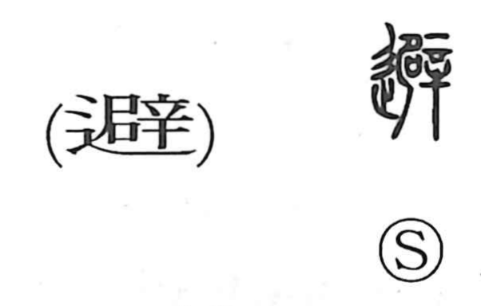

避

Kun: sakeru, yokeru | On: hi
to avoid ・ to evade ・ to shun
Explanation
避 is a phono‑semantic character formed with the road element and the phonetic 辟. Shirakawa sees 辟 as built from the side view of a person (尸) and a curved knife (辛), evoking a punitive act in which flesh was cut from the waist—the graph even suggesting the severed piece itself. From this base, 僻 (“to lean, to be askew”) pictures a body no longer able to stand straight, a twist like the motion one makes when dodging. With the road/path element added, 避 takes on the sense of veering aside on the way—sidestepping, taking a detour, keeping clear. In later usage it broadens to general ideas of avoidance, evasion, and drawing back.